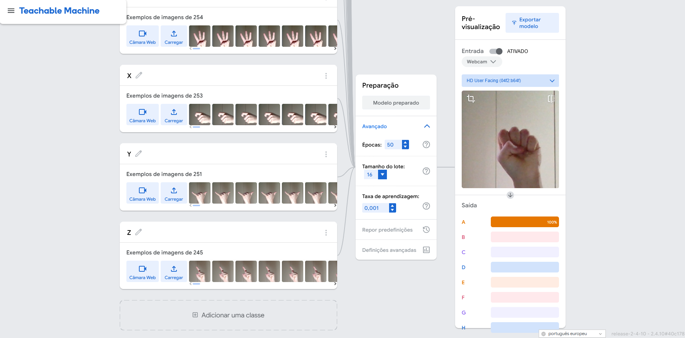
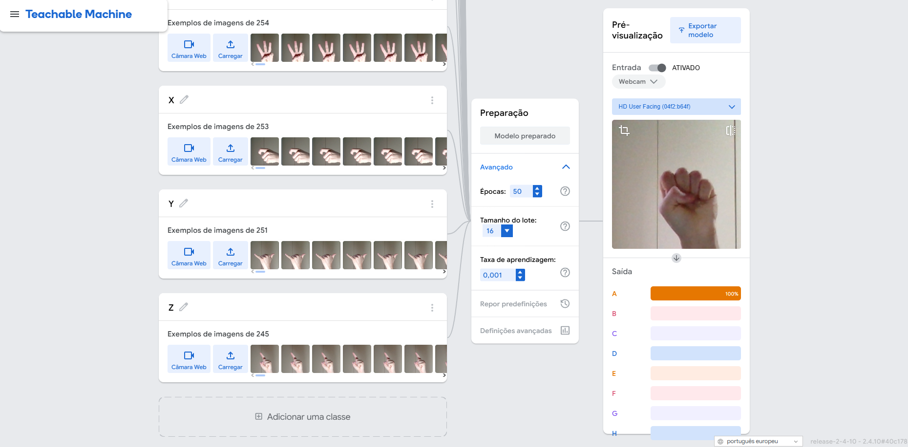

Projeto de Sistemas Multimídias
Reconhecimento de Gestos em LIBRAS
Sistema que realiza o reconhecimento do alfabeto da Língua Brasileira de Sinais utilizando Visão Computacional para promover a inclusão educacional.
01. Demonstração
Soletrando "O I U F S C" em tempo real:

02. Tecnologias e Requisitos
Python 3.8
TensorFlow 2.8
MediaPipe 0.10
OpenCV
Keras
Atenção
Recomenda-se o uso do Python 3.8.0. Versões superiores (3.11+) podem apresentar incompatibilidades com o TensorFlow e MediaPipe utilizados.
03. Como Rodar o Projeto
1. Clone o repositório:
git clone https://github.com/dev-josehenrique/ReconhecimentoLibras.git cd ReconhecimentoLibras
2. Crie e ative o ambiente virtual:
python -m venv venv # No Windows: venv\Scripts\activate # No Linux/Mac: source venv/bin/activate
3. Instale as dependências:
pip install -r requirements.txt
4. Execute o programa (pressione 'q' para sair):
python main.py
04. Galeria do Projeto
 


05. Agradecimentos
- ▹Google Teachable Machine, MediaPipe, TensorFlow, Keras, OpenCV, NumPy, Protobuf e a comunidade de Visão Computacional.